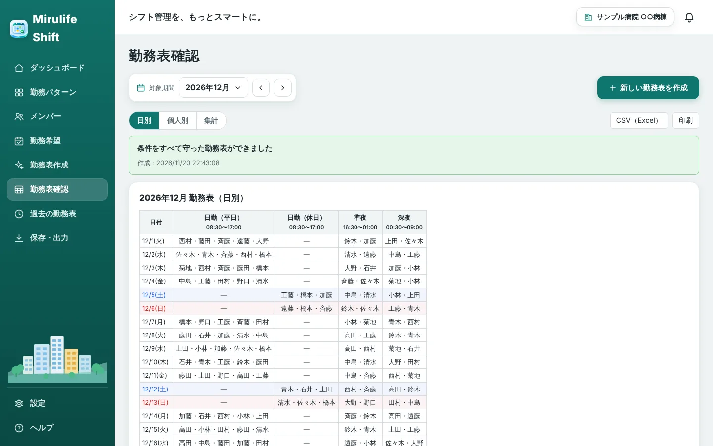
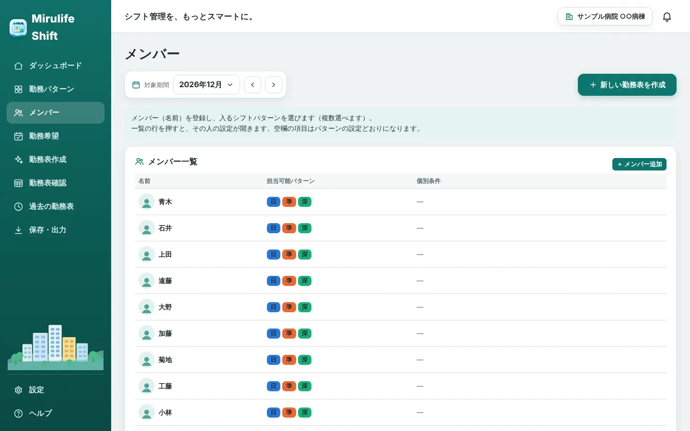
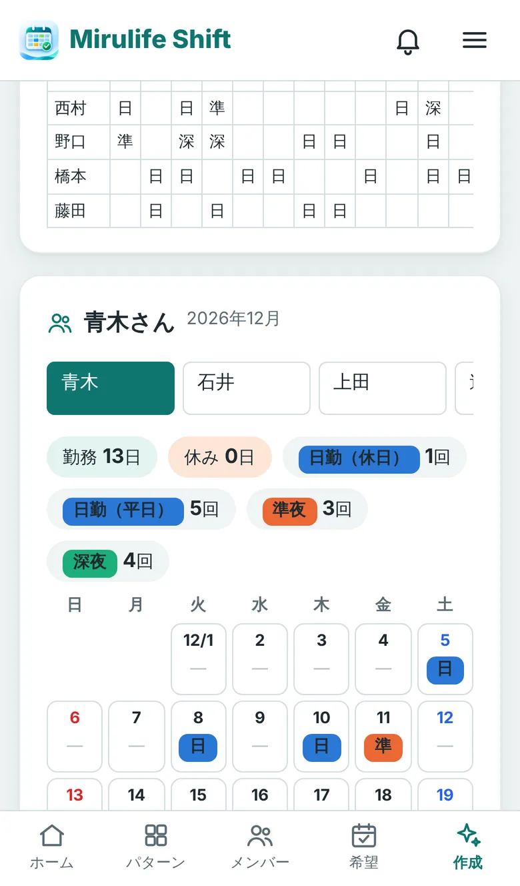

Mirulife Shift でできること
勤務表づくりの「考える・調整する・確かめる」を、まとめて手伝います。
条件を守って自動作成
必要な人数、勤務できない日、休み希望、勤務の間隔、連続勤務の上限を守りながら、回数や土日祝の担当ができるだけそろうように組みます。数秒で別の案も作れます。
現場の細かい決まりにも
「終日1人、または午前＋午後で2人」のような組み合わせ、週の回数の目安、Aさんを他の人より多く、曜日で変わる体制、かけもちする人の勤務間隔まで設定できます。
作れないときは理由を表示
どうしても条件を満たせないときは、「この日のこの時間帯に、入れる人が足りない」のように理由を示し、見直しのヒントを出します。
希望の集め方を選べる
カレンダーを押して入力するほか、Googleフォームでメンバーから集めて、まとめて取り込むこともできます。名簿や勤務の型は、Excel（CSV）からも読み込めます。
見やすく確認・出力
日別・個人別・集計を切り替えて確認。かなわなかった希望や目安も一覧で分かります。CSV（Excel）への書き出しと印刷に対応しています。
データは端末の中だけ
登録やログインは不要です。名簿や勤務表のデータは、お使いの端末のブラウザの中に保存され、インターネットに送られません（Googleフォーム連携を使うときを除く）。
画面のようす
パソコンでもスマホでも使えます。



見本から、すぐに始められます
職場に近い見本を選ぶと、勤務の型・メンバー・条件がまとめて入ります。名前や人数を直すだけで使えます。
見本を開くと、そのブラウザに入っている内容は置き換わります（初めての方はそのまま始まります）。
使い方は4ステップ
上から順に進めるだけで、勤務表ができあがります。
時間帯・必要な人数・曜日・祝日の扱いと、勤務間隔などの決まりを入れます。
名前と担当できる勤務を選び、人ごとの条件（入れない曜日、週の回数など）を入れます。
勤務希望・休み希望をカレンダーで入力。Googleフォームで集めて取り込むこともできます。
ボタンを押すと数秒で完成。日別・個人別・集計で確かめ、印刷やExcelに出力します。
料金
勤務表づくりの機能は、すべて無料でお使いいただけます。
基本機能
- 勤務表の自動作成（人数・人ごとの条件の制限なし）
- 見本、CSV（Excel）の読み込み・書き出し、印刷
- Googleフォームでの希望集め
- 登録・ログイン不要
準備中の機能
- 今の勤務表の写真から、最初の設定を自動で作る
- チャットで「〇〇さんを5日休みに」のように調整
公開時期・料金は決まりしだいお知らせします。
よくある質問
登録やログインは必要ですか？
不要です。ページを開けば、すぐに使い始められます。
データはどこに保存されますか？
お使いの端末のブラウザの中に保存され、インターネットには送られません（Googleフォーム連携を使う場合、フォームの作成と回答の受け取りのときだけ、あなたのGoogleアカウントとやり取りします）。ブラウザの履歴を消すと消えることがあるため、「保存・出力」から、ときどきファイルに書き出して保管してください。
別のパソコンやスマホでも使えますか？
使えます。ただしデータは端末ごとに保存されるため、「保存・出力」で書き出したファイルを、別の端末で読み込んでください。iPhoneでは、ホーム画面のアイコンから開いたときとSafariで開いたときで、保存場所が別になります。
何人まで使えますか？費用はかかりますか？
人数や勤務の型の数に制限はなく、基本機能はすべて無料です。数十人規模の職場で、数秒で作成できることを確かめています。
病院の情報システム部門には、どう説明すればよいですか？
「アプリはブラウザの中だけで動き、名簿や勤務表のデータを外部のサーバーに送らない」点をお伝えください。患者さんの情報は扱いません。
アクセス解析はしていますか？
サービス改善のため、Cookie を使わない Vercel Web Analytics で、ページの表示回数や「見本を開いた」「勤務表を作成した」といった操作の回数だけを数えています。名簿・勤務表の中身や名前は送られません。
要望や不具合はどこに伝えればよいですか？
アプリの左のメニュー（スマホは右上のメニュー）にある「ご意見・ご要望」から送れます。送られるのは書いた内容だけで、勤務表のデータは送られません。
スマホのホーム画面に置けますか？
置けます。iPhoneは Safari の「共有」→「ホーム画面に追加」、Androidは Chrome のメニュー →「ホーム画面に追加」から。アプリのように全画面で使えます。
作った勤務表は、今の様式で使えますか？
CSV（Excel）で書き出せるので、表計算ソフトで今の様式に貼り付けて使えます。そのまま印刷することもできます。